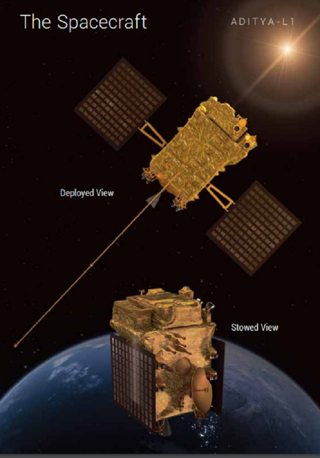
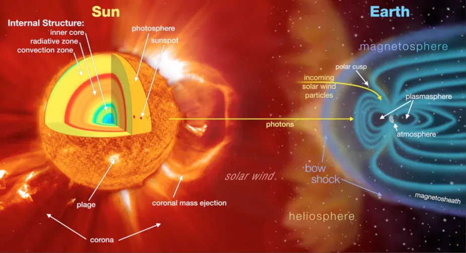
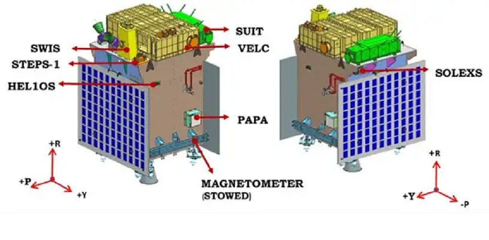
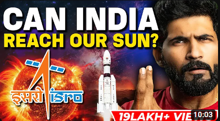
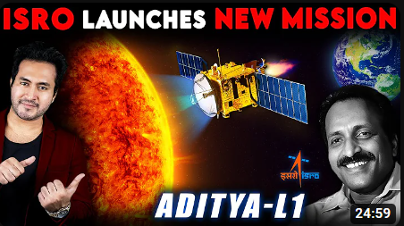
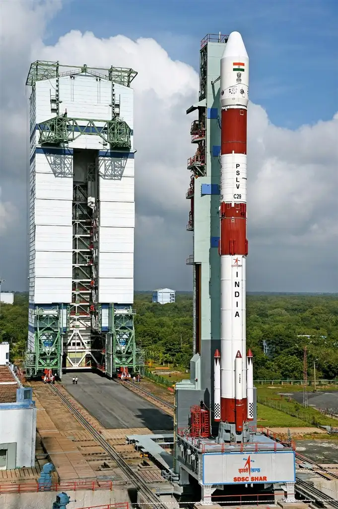
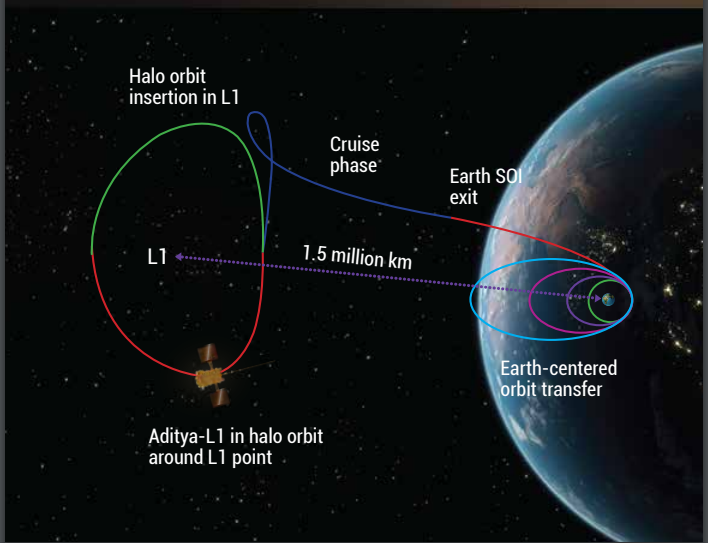
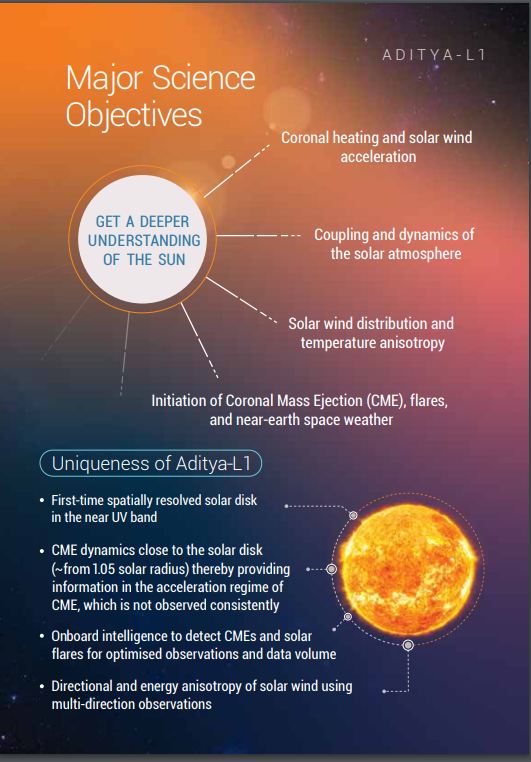

The first Indian space-based observatory-class solar mission
to unlock the mysteries of the Sun.
ABOUT ADITYA-L1
Aditya L1 is the first space-based
observatory-class Indian solar
mission to study the Sun. The
spacecraft is planned to be
placed in a halo orbit around the
Lagrangian point 1 (L1) of the
Sun-Earth system, which is about
1.5 million km from the Earth. A
satellite placed in the halo orbit
around the L1 point has the major
advantage of continuously viewing
the Sun without any occultation/
eclipse. This will provide a greater
advantage of observing the
solar activities continuously.
...
The
spacecraft carries seven payloads
to observe the photosphere,
chromosphere, and the outermost
layers of the Sun (the corona) using
electromagnetic and particle
detectors. Using the special
vantage point of L1, four payloads directly view the Sun and the
remaining three payloads carry
out in-situ studies of particles and
fields at the Lagrange point L1.
The suite of Aditya L1 payloads
is expected to provide the most
crucial information to understand
the problems of coronal heating,
Coronal Mass Ejection, pre-flare
and flare activities, and their
characteristics, dynamics of space
weather, study of the propagation
of particles, and fields in the
interplanetary medium etc.

WHY STUDY SUN?
The sun is the nearest star and
therefore can be studied in much
more detail as compared to other
stars. By studying the sun we can
learn much more about stars in
our Milky Way as well as about
stars in various other galaxies.
The sun is a very dynamic star
that extends much beyond
what we see. It shows several
eruptive phenomena and releases
immense amount of energy in the
solar system. If such explosive solar
phenomena is directed towards
the earth, it could cause various
types of disturbances in the near
earth space environment.
...
Various spacecraft and
communication systems are
prone to such disturbances
and therefore an early warning
of such events is important
for taking corrective measures
beforehand. In addition to these,
if an astronaut is directly exposed
to such explosive phenomena,
he/she would be in danger.
The various thermal and magnetic
phenomena on the sun are of
extreme nature. Thus, the sun
also provides a good natural
laboratory to understand those
phenomena which cannot be
directly studied in the lab. For more information Click_me
THE SPACE WEATHER
Aditya L1 is the first space-based
observatory-class Indian solar
mission to study the Sun. The
spacecraft is planned to be
placed in a halo orbit around the
Lagrangian point 1 (L1) of the
Sun-Earth system, which is about
1.5 million km from the Earth. A
satellite placed in the halo orbit
around the L1 point has the major
advantage of continuously viewing
the Sun without any occultation/
eclipse. This will provide a greater
advantage of observing the
solar activities continuously.
...
The
spacecraft carries seven payloads
to observe the photosphere,
chromosphere, and the outermost
layers of the Sun (the corona) using
electromagnetic and particle
detectors. Using the special
vantage point of L1, four payloads directly view the Sun and the
remaining three payloads carry
out in-situ studies of particles and
fields at the Lagrange point L1.
The suite of Aditya L1 payloads
is expected to provide the most
crucial information to understand
the problems of coronal heating,
Coronal Mass Ejection, pre-flare
and flare activities, and their
characteristics, dynamics of space
weather, study of the propagation
of particles, and fields in the
interplanetary medium etc.

ADITYA-L1 SCIENCE PAYLOADS
The Aditya-L1 mission carries a
suit of seven scientific payloads
to carry out systematic study of
the Sun. The Visible Emission
Line Coronagraph (VELC) studies
the solar corona and dynamics of
Coronal Mass Ejections. The Solar
Ultra-violet Imaging Telescope
(SUIT) payload images the Solar
Photosphere and Chromosphere
in near Ultra-violet (UV) and also
measures the solar irradiance
variations in near UV. The Aditya
Solar wind Particle EXperiment
(ASPEX) and Plasma Analyser
Package for Aditya
(PAPA) payloads study the solar wind
and energetic ions, as well as their
energy distribution.
...The Solar Low
Energy X-ray Spectrometer
(SoLEXS) and The High Energy
L1 Orbiting X-ray Spectrometer
(HEL1OS) studies the X-ray flares
from the Sun over a wide X-ray
energy range.
The Magnetometer
payload is capable of measuring
interplanetary magnetic fields at
the L1 point. The science payloads of Aditya-L1
are indigenously developed
by different laboratories in the
country. The VELC instrument is
developed at the Indian Institute
of Astrophysics, Bangalore; SUIT
instrument at Inter University
Centre for Astronomy &
Astrophysics , Pune; ASPEX
instrument at Physical Research
Laboratory, Ahmedabad;
PAPA payload at Space Physics
Laboratory, Vikram Sarabhai Space
Centre, Thiruvananthapuram;
SoLEXS and HEL1OS payloads at
U R Rao Satellite Centre, Bangalore,
and the Magnetometer payload
at the Laboratory for Electro
Optics Systems, Bangalore. All
the payloads are developed with
the close collaboration of various
centres of ISRO. For more information Click_me



×
ABOUT THE LAUNCH VEHICLE PSLV
Polar Satellite Launch Vehicle (PSLV) is the third generation launch
vehicle of India. It is the first Indian launch vehicle to be equipped with liquid stages. After its first
successful launch in October 1994, PSLV emerged as a reliable and versatile workhorse launch vehicle of India.
The vehicle has launched numerous Indian and foreign customer satellites.
... Besides, the vehicle successfully launched two spacecraft
"Chandrayaan-1 in 2008 and Mars Orbiter Spacecraft in 2013"that later travelled to Moon and Mars
respectively. Chandrayaan-1 and MOM were feathers in the hat of PSLV. The launch of PSLV-C48 marks the 50th
Launch of PSLV. Besides, the vehicle successfully launched two spacecraft " Chandrayaan-1 in 2008 and Mars
Orbiter Spacecraft in 2013"that later traveled to Moon and Mars respectively.
For more information
Click_me

WHAT IS LAGRANGE POINTS
For a two-body gravitational system, the Lagrange Points are the
positions in space where a small object tends to stay, if put
there. These points in space for a two-body system such as Sun
and Earth can be used by the spacecraft to remain at these
positions with reduced fuel consumption.
Technically at Lagrange point, the gravitational pull of the two
large bodies equals the necessary centripetal force required for a
small object to move with them. For two-body gravitational
systems, there are total five Lagrange points, denoted as
L1, L2, L3, L4, and L5. The Lagrange point L1 lies between
Sun-Earth line. The distance of L1 from Earth is approximately
1% of the Earth-Sun distance.... L1 Point: It offers an uninterrupted view of the Sun and is
currently occupied by the Solar and Heliospheric Observatory Satellite (SOHO).
L2 Point: This point has been home to spacecraft like WMAP and Planck, and it will host the James Webb Space
Telescope in the future. L2 is ideal for astronomy because it allows for easy communication with Earth,
solar power generation, and clear views of deep space.
L3 Point: L3 remains hidden behind the Sun at all times, making it unlikely for practical use. It has
inspired science fiction concepts like hidden planets.
L4 and L5 Points: These points are stable orbits when the mass ratio between two large bodies exceeds 24.96.
They are home to objects known as Trojans, including asteroids and satellites, which share orbits with
larger bodies in the solar system. Jupiter has numerous Trojan asteroids, and some Mars and Saturn's moons
also have Trojan companions.
TRAJECTORY TO L1
The Aditya-L1 mission will be launched by ISRO’s PSLV XL rocket from
Satish Dhawan Space Centre SHAR (SDSC-SHAR), Sriharikota.
Initially, the spacecraft will be placed in a Low Earth Orbit. Subsequently,
the orbit will be made more elliptical and later the spacecraft will be
launched towards the Lagrange point (L1) by using onboard propulsion.
As the spacecraft travels towards L1, it will exit the Earths’ gravitational
Sphere of Influence (SOI). After exit from SOI, the cruise phase will
start and subsequently the spacecraft will be injected into a large halo
orbit around L1. The total travel time from launch to L1 would take about
four months for Aditya-L1. The Trajectory of Aditya-L1 mission is
shown in the figure below.

MAJOR SCIECE OBJECTIVES AND UNIQUENESS OF ADITYA-L1
MAJOR SCIECE OBJECTIVES OF ADITYA-L1 :
Understanding the Coronal Heating and Solar Wind
Acceleration.
Understanding initiation of Coronal Mass Ejection
(CME), flares and near-earth space weather.
To understand coupling and dynamics of the solar
atmosphere.
To understand solar wind distribution and
temperature anisotropy.
UNIQUENESS OF ADITYA-L1 :
First-time spatially resolved solar disk
in the near UV band
CME dynamics close to the solar disk
(~from1.05 solar radius) thereby providing
information in the acceleration regime of
CME, which is not observed consistently
Onboard intelligence to detect CMEs and solar
flares for optimised observations and data volume
Directional and energy anisotropy of solar wind using
multi-direction observations

IS ADITYA-L1 A COMPLETE
MISSION TO STUDY THE SUN?
The obvious answer is a ‘NO’ which
is not only true for Aditya-L1 but
in general for any space mission.
The reason is that due to the
limited mass, power and volume
of the spacecraft that carries the
scientific payloads in space, only
a limited set of instruments with
limited capacity can be sent onboard the spacecraft. In case of
Aditya-L1, all the measurements
will be made from the Lagrange
point L1. As an example, the
various phenomena of the sun are
multi-directional and therefore the
directional distribution of energy
of explosive/eruptive phenomena
will not be possible to study with
Aditya-L1 alone.
... Another Lagrange point known
as L5 is a good vantage point for
studying the Earth directed CME
events and assessing the space
weather. Also, the polar regions
of the sun are not well studied
due to technological challenges
of achieving spacecraft orbits
for such studies. The sun polar
dynamics and magnetic fields are
believed to play important role in
deriving the solar cycles. Further,
the polarisation measurements
of solar radiations at different
wavelengths are required to
understand the various processes
occurring in and around the sun.